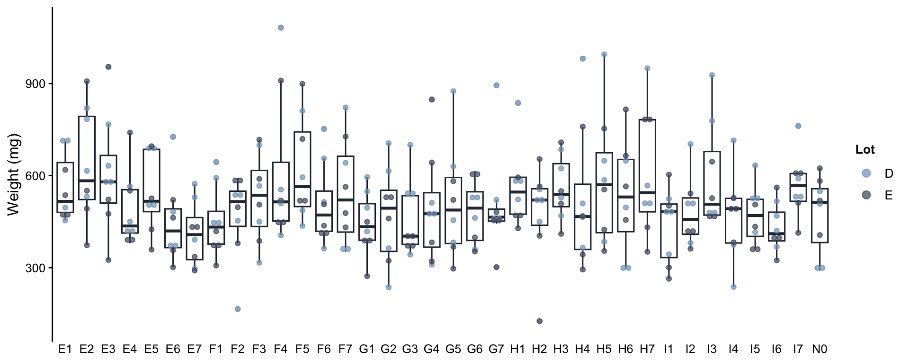

Because the single substances were tested again during the mixture experiment, the goal here is to compare the observed effects in both experiments and therefore to judge the reproducibility between the experiments. We then need to compare the dose-response curves for EPX & IMD obtained with the experiment UNI and the experiment MIX (Autumn 2024 vs. Spring 2025).
9.1 Data importation
Code
# Value given to controls for plotVal_Ctrl <-1e-4Label_Ctrl <-"0 (Ctrl)"# Data from experiment A (Single substances experiement)data_expA_repro <-f_read_data_expA_repro()df_expA_repro_tot <- data_expA_repro$df_expA_reprodf_expA_repro <- data_expA_repro$df_expA_repro_alivedf_expA_repro_mean <- data_expA_repro$df_expA_repro_alive_mean# Retriving EC50 df_drc_param <-read.csv(here::here("data/DRC_parameters_cocoons_really_used.csv"))EPX_EC50_drc <- df_drc_param$coef.drc.4.[3]IMD_EC50_drc <- df_drc_param$coef.drc.4.[4]# Data from experiment B (Mixture experiment)data_expB <-f_read_data_expB()df_expB_growth <- data_expB$df_expB_growthdf_expB_repro <- data_expB$df_expB_reprodf_expB_repro_mean <- data_expB$df_expB_repro_meandf_expB_repro_single <- data_expB$df_expB_repro_singledf_expB_repro_single_mean <- data_expB$df_expB_repro_single_mean# Retriving EC50 df_drc_param <-read.csv(here::here("data/DRC_parameters_cocoons_really_used.csv"))EPX_EC50_drc <- df_drc_param$coef.drc.4.[3]IMD_EC50_drc <- df_drc_param$coef.drc.4.[4]
9.2 Initial state of the mixture experiment (experiment B)
We can first take a look at the initial weights of individuals from the mixture experiment (Figure 9.1).
Code
pal_lot <-c(Nord_frost[3], Nord_polar[4])# Weights at t=0p <-ggplot(data =subset(df_expB_growth, t ==0),aes(x = Condition,y = w )) +geom_boxplot(alpha =0.2,color = Nord_polar[1] ) +geom_dotplot(aes(color = Lot,fill = Lot ),binaxis ="y",stackdir ="center",dotsize =0.5,alpha =0.7 ) +scale_color_manual(values = pal_lot) +scale_fill_manual(values = pal_lot) +labs(x ="Condition", y ="Weight (mg)") +theme_classic(12) +theme(# legend.position = "none",legend.title =element_text(size = sizetitle -2, face ="bold"),legend.text =element_text(size = sizetitle -2, face ="plain"),title =element_text(size = sizetitle, face ="bold"),axis.title.x =element_blank(),axis.title.y =element_text(size = sizetitle, face ="plain"),# axis.text.x = element_blank(),axis.line.x =element_blank(),axis.ticks.x =element_blank(),strip.background =element_rect(color ="black",fill ="grey95",size =0,linetype ="solid" ) )p

Figure 9.1: Initial weights of earthworms according to batches.
Code
summary(subset(df_expB_growth, t ==0))
Lot Date t ID
Length:288 Min. :2025-03-26 Min. :0 Min. : 1.00
Class :character 1st Qu.:2025-03-26 1st Qu.:0 1st Qu.: 72.75
Mode :character Median :2025-03-29 Median :0 Median :144.50
Mean :2025-03-29 Mean :0 Mean :144.50
3rd Qu.:2025-04-01 3rd Qu.:0 3rd Qu.:216.25
Max. :2025-04-01 Max. :0 Max. :288.00
ID_cosm Dose_EPX Dose_IMD Ratio
Min. : 1.00 Min. : 0.000 Min. :0.00000 Length:288
1st Qu.: 36.75 1st Qu.: 0.412 1st Qu.:0.00115 Class :character
Median : 72.50 Median : 25.013 Median :0.06935 Mode :character
Mean : 72.50 Mean : 80.633 Mean :0.22242
3rd Qu.:108.25 3rd Qu.:102.038 3rd Qu.:0.34820
Max. :144.00 Max. :529.619 Max. :1.46820
Line Nb_rep No_vdt Box Color
Min. :0.000 1:72 Min. :1.0 Min. : 1.00 Length:288
1st Qu.:2.000 2:72 1st Qu.:1.0 1st Qu.:20.75 Class :character
Median :4.000 3:72 Median :1.5 Median :41.50 Mode :character
Mean :3.889 4:72 Mean :1.5 Mean :40.97
3rd Qu.:6.000 3rd Qu.:2.0 3rd Qu.:61.25
Max. :7.000 Max. :2.0 Max. :80.00
ID_camp w Status Condition
Length:288 Min. : 125.5 Length:288 Length:288
Class :character 1st Qu.: 406.0 Class :character Class :character
Mode :character Median : 502.1 Mode :character Mode :character
Mean : 515.8
3rd Qu.: 590.2
Max. :1082.2
L TU_drc Dose_IMD_plot Dose_EPX_plot
Min. : 5.007 Min. :0.00000 Min. :0.00010 Min. : 0.0001
1st Qu.: 7.405 1st Qu.:0.05568 1st Qu.:0.00115 1st Qu.: 0.4121
Median : 7.948 Median :0.55540 Median :0.06935 Median : 25.0130
Mean : 7.942 Mean :0.94927 Mean :0.22244 Mean : 80.6334
3rd Qu.: 8.388 3rd Qu.:1.75356 3rd Qu.:0.34820 3rd Qu.:102.0383
Max. :10.267 Max. :3.13330 Max. :1.46820 Max. :529.6186
TU_drc_plot
Min. :0.00010
1st Qu.:0.05568
Median :0.55540
Mean :0.94927
3rd Qu.:1.75356
Max. :3.13330
Figure 9.3: Comparaison of the results obtained in the experiment MIX (dark blues) with the results of Experiment UNI (blues). The line represents the dose-response curves obtained for the number of cocoons produced. Crosses correspond to the number of cocoons produced by one cosm and the bold points represents the mean per dose.
ANOVA table
ModelDf RSS Df F value p value
1st model 68 -1584.0
2nd model 67 -1585.1 1 -0.0476 1.0000
Estimated EC\(_{50}\) are not significatively different.
However, for the Jonker model, it is preferable to calibrate the model using the dose–response curves obtained during the same experiment as the one used to estimate the interaction parameter. This ensures consistency in experimental conditions and accounts for potential inter-experiment variability.
Source Code
```{r lib, include=F}library(here)source(file = here::here("functions/fun.R"))f_load_libraries_colors()palette <- colorRampPalette(c("#5E81AC", "#88C0D0"))col_mix <- Nord_polar[4]pal_ratio <- c("#88C0D0", col_mix, col_mix, col_mix, "#5E81AC",col_mix)path_fig <- here::here("fig/Mixture/Comp_expA_expB")```# Comparison of the single substances experiment with the mixture experiment ? {#sec-MIXSpringComp}Because the single substances were tested again during the mixture experiment, the goal here is to compare the observed effects in both experiments and therefore to judge the reproducibility between the experiments. We then need to compare the dose-response curves for EPX & IMD obtained with the experiment UNI and the experiment MIX (Autumn 2024 vs. Spring 2025).## Data importation```{r datamix, message = F, warning=F}# Value given to controls for plotVal_Ctrl <- 1e-4Label_Ctrl <- "0 (Ctrl)"# Data from experiment A (Single substances experiement)data_expA_repro <- f_read_data_expA_repro()df_expA_repro_tot <- data_expA_repro$df_expA_reprodf_expA_repro <- data_expA_repro$df_expA_repro_alivedf_expA_repro_mean <- data_expA_repro$df_expA_repro_alive_mean# Retriving EC50 df_drc_param <- read.csv(here::here("data/DRC_parameters_cocoons_really_used.csv"))EPX_EC50_drc <- df_drc_param$coef.drc.4.[3]IMD_EC50_drc <- df_drc_param$coef.drc.4.[4]# Data from experiment B (Mixture experiment)data_expB <- f_read_data_expB()df_expB_growth <- data_expB$df_expB_growthdf_expB_repro <- data_expB$df_expB_reprodf_expB_repro_mean <- data_expB$df_expB_repro_meandf_expB_repro_single <- data_expB$df_expB_repro_singledf_expB_repro_single_mean <- data_expB$df_expB_repro_single_mean# Retriving EC50 df_drc_param <- read.csv(here::here("data/DRC_parameters_cocoons_really_used.csv"))EPX_EC50_drc <- df_drc_param$coef.drc.4.[3]IMD_EC50_drc <- df_drc_param$coef.drc.4.[4]```## Initial state of the mixture experiment (experiment B)We can first take a look at the initial weights of individuals from the mixture experiment (@fig-initMIXSpringcomp).```{r D0, warning=F, message=F}#| fig-cap: Initial weights of earthworms according to batches. #| label: fig-initMIXSpringcomp#| fig-width: 10#| fig-height: 4pal_lot <- c(Nord_frost[3], Nord_polar[4])# Weights at t=0p <- ggplot( data = subset(df_expB_growth, t == 0), aes( x = Condition, y = w )) + geom_boxplot( alpha = 0.2, color = Nord_polar[1] ) + geom_dotplot( aes( color = Lot, fill = Lot ), binaxis = "y", stackdir = "center", dotsize = 0.5, alpha = 0.7 ) + scale_color_manual(values = pal_lot) + scale_fill_manual(values = pal_lot) + labs(x = "Condition", y = "Weight (mg)") + theme_classic(12) + theme( # legend.position = "none", legend.title = element_text(size = sizetitle - 2, face = "bold"), legend.text = element_text(size = sizetitle - 2, face = "plain"), title = element_text(size = sizetitle, face = "bold"), axis.title.x = element_blank(), axis.title.y = element_text(size = sizetitle, face = "plain"), # axis.text.x = element_blank(), axis.line.x = element_blank(), axis.ticks.x = element_blank(), strip.background = element_rect( color = "black", fill = "grey95", size = 0, linetype = "solid" ) )p``````{r saveinit, include=F}ggsave( filename = "ExpB_initial_weights.png", plot = p, width = 8, height = 4, path = path_fig)ggsave( filename = "ExpB_initial_weights.jpg", plot = p, width = 8, height = 4, path = path_fig)ggsave( filename = "ExpB_initial_weights.svg", plot = p, width = 8, height = 4, path = path_fig)``````{r}summary(subset(df_expB_growth, t ==0))```## Comparison of the controls```{r, message=F, warning=F}#| fig-cap: Comparaison of the controls obtained in the mixture experiment (dark blues) with the results of the experiment UNI (blues). #| label: fig-drcIMDEPXcompctrl#| fig-width: 4#| fig-height: 5df_expB_repro_ctrl <- subset(df_expB_repro, Ratio == "N") |> dplyr::select(Nb_cocoons) |> mutate(Experiment = "Experiment MIX")df_expA_repro_ctrl <- subset(df_expA_repro, Dose == 0) |> dplyr::select(Nb_cocoons, Lot) |> mutate(Experiment = case_when( Lot == "A" ~ "Experiment UNI\nSpring 2024", Lot == "B" ~ "Experiment UNI\nSummer 2024" )) |> dplyr::select(Nb_cocoons, Experiment)df_controls <- rbind(df_expA_repro_ctrl, df_expB_repro_ctrl)df_controls$Experiment <- factor(df_controls$Experiment, levels = c("Experiment UNI\nSpring 2024", "Experiment UNI\nSummer 2024", "Experiment MIX"))p <- ggplot( data = df_controls, aes( x = Experiment, y = Nb_cocoons )) + geom_dotplot( binaxis = "y", stackdir = "center", dotsize = 0.8, alpha = 0.7, color = Nord_aurora[4], fill = Nord_aurora[4] ) + labs( x = "", y = "Number of cocoons produced per cosm (#)" ) + theme_minimal() + theme( axis.text.x = element_text(angle = 45, hjust = 1) )p``````{r savecompctrl, include=F}ggsave( filename = "Comp_expA_expB_ctrl.png", plot = p, width = 4, height = 5, path = path_fig)ggsave( filename = "Comp_expA_expB_ctrl.jpg", plot = p, width = 4, height = 5, path = path_fig)``````{r testcompctrl, message=F, warning=F}#| code-fold: showpairwise.wilcox.test(df_controls$Nb_cocoons, df_controls$Experiment, p.adjust.method = "bonferroni", exact=F)lm.controls <- lm(Nb_cocoons ~ Experiment, data = df_controls)lsmeans(lm.controls,pairwise~Experiment,adjust='bonferroni')```The controls of the two different experiments are not significatively different.## Dose-response curvesWe then get the dose-response curves of the single substances from experiment UNI and experiment MIX.### Experiment UNI - Dose-response curves```{r drcexpA, warning=F, message=F}drc.ExpA <- drm( Nb_cocoons ~ Dose, Molecule, data = df_expA_repro, type = "Poisson", fct = LL.4( names = c("slope", "Ymin", "Ymax", "EC50"), fixed = c(NA, 0, NA, NA) ), # Reproduction is expected to reach 0 for large concentrations pmodels = data.frame(Molecule, Molecule, Molecule))data_CI_ExpA <- f_CI_drc( Dose_min = Val_Ctrl, Dose_max = 5000, Molecules = c("EPX", "IMD"), drc.model = drc.ExpA, signif_param = 3)df_CI_ExpA <- data_CI_ExpA$df_CIdf_param.ExpA <- data_CI_ExpA$df_paramEPX_EC50_ExpA <- coef(drc.ExpA)[5]IMD_EC50_ExpA <- coef(drc.ExpA)[6]summary(drc.ExpA)```### Experiment MIX - Dose-response curves```{r drcexpB, warning=F, message=F}# Common Ymax and slopedrc.ExpB <- drm( Nb_cocoons ~ Dose, Molecule, data = df_expB_repro_single, type = "Poisson", fct = LL.4( names = c("slope", "Ymin", "Ymax", "EC50"), fixed = c(NA, 0, NA, NA) ), # Reproduction is expected to reach 0 for large concentrations pmodels = data.frame(Molecule, Molecule, Molecule))data_CI_ExpB <- f_CI_drc( Dose_min = Val_Ctrl, Dose_max = 5000, Molecules = c("EPX", "IMD"), drc.model = drc.ExpB, signif_param = 3)df_CI_ExpB <- data_CI_ExpB$df_CIdf_param.ExpB <- data_CI_ExpB$df_paramEPX_EC50_ExpB <- coef(drc.ExpB)[5]IMD_EC50_ExpB <- coef(drc.ExpB)[6]summary(drc.ExpB)```## Comparison of the two experiments for single substances```{r, warning=F, message=F}#| fig-cap: Comparaison of the results obtained in the experiment MIX (dark blues) with the results of Experiment UNI (blues). The line represents the dose-response curves obtained for the number of cocoons produced. Crosses correspond to the number of cocoons produced by one cosm and the bold points represents the mean per dose.#| label: fig-drcIMDEPXcomp#| fig-width: 8#| fig-height: 4df_expA_repro_IMD <- df_expA_repro |> filter(Molecule == "IMD")df_expA_repro_EPX <- df_expA_repro |> filter(Molecule == "EPX")df_expA_repro_IMD_mean <- df_expA_repro_mean |> filter(Molecule == "IMD")df_expA_repro_EPX_mean <- df_expA_repro_mean |> filter(Molecule == "EPX")df_expB_repro_single_IMD <- df_expB_repro_single |> filter(Molecule == "IMD")df_expB_repro_single_EPX <- df_expB_repro_single |> filter(Molecule == "EPX")df_expB_repro_single_IMD_mean <- df_expB_repro_single_mean |> filter(Molecule == "IMD")df_expB_repro_single_EPX_mean <- df_expB_repro_single_mean |> filter(Molecule == "EPX")x <- seq(0.0001, 5000, 0.01)line_width <- 1.2darkening <- 0.2col_IMD_dark <- colorspace::darken(col_IMD, darkening)col_EPX_dark <- colorspace::darken(col_EPX, darkening)p_E <- ggplot() + geom_ribbon( data = subset(df_CI_ExpB, Molecule == "EPX"), aes( x = Dose, y = p, ymin = pmin, ymax = pmax ), alpha = 0.2, fill = col_EPX_dark, ) + geom_ribbon( data = subset(df_CI_ExpA, Molecule == "EPX"), aes( x = Dose, y = p, ymin = pmin, ymax = pmax ), alpha = 0.2, fill = col_EPX, ) + geom_line( data = subset(df_CI_ExpB, Molecule == "EPX"), aes( x = Dose, y = p ), color = col_EPX_dark, linewidth = line_width ) + geom_line( data = subset(df_CI_ExpA, Molecule == "EPX"), aes( x = Dose, y = p ), color = col_EPX, linewidth = line_width ) + geom_point( data = df_expB_repro_single_EPX, aes( x = Dose_plot, y = Nb_cocoons ), color = col_EPX_dark, alpha = 0.6, shape = 4 ) + geom_point( data = df_expA_repro_EPX, aes( x = Dose_plot, y = Nb_cocoons ), color = col_EPX, alpha = 0.5, shape = 4 ) + geom_point( data = df_expB_repro_single_EPX_mean, aes( x = Dose_plot, y = Nb_cocoons ), color = col_EPX_dark, size = 3 ) + geom_point( data = subset(df_expA_repro_EPX_mean, Molecule == "EPX"), aes( x = Dose_plot, y = Nb_cocoons ), color = col_EPX, size = 3 ) + annotate( geom = "text", x = 1500, y = 2, label = "E", fontface = "bold" ) + scale_x_log10( breaks = c(Val_Ctrl, 0.01, 0.1, 1, 10, 100), # inclure la valeur fictive labels = c(Label_Ctrl, "0.01", "0.1", "1", "10", "100") ) + labs( x = "Concentration of EPX (mg/kg)", y = "Number of cocoons produced per cosm (#)" ) + theme_bw()p_I <- ggplot() + geom_ribbon( data = subset(df_CI_ExpB, Molecule == "IMD"), aes( x = Dose, y = p, ymin = pmin, ymax = pmax ), alpha = 0.2, fill = col_IMD_dark, # color = col_IMD ) + geom_ribbon( data = subset(df_CI_ExpA, Molecule == "IMD"), aes( x = Dose, y = p, ymin = pmin, ymax = pmax ), alpha = 0.2, fill = col_IMD, # color = col_IMD ) + geom_line( data = subset(df_CI_ExpB, Molecule == "IMD"), aes( x = Dose, y = p ), color = col_IMD_dark, linewidth = line_width ) + geom_line( data = subset(df_CI_ExpA, Molecule == "IMD"), aes( x = Dose, y = p ), color = col_IMD, linewidth = line_width ) + geom_point( data = df_expB_repro_single_IMD, aes( x = Dose_plot, y = Nb_cocoons ), color = col_IMD_dark, alpha = 0.6, shape = 4 ) + geom_point( data = df_expA_repro_IMD, aes( x = Dose_plot, y = Nb_cocoons ), color = col_IMD, alpha = 0.5, shape = 4 ) + geom_point( data = df_expB_repro_single_IMD_mean, aes( x = Dose_plot, y = Nb_cocoons ), color = col_IMD_dark, size = 3 ) + geom_point( data = subset(df_expA_repro_IMD_mean, Molecule == "IMD"), aes( x = Dose_plot, y = Nb_cocoons ), color = col_IMD, size = 3 ) + annotate( geom = "text", x = 1500, y = 2, label = "I", fontface = "bold" ) + scale_x_log10( breaks = c(Val_Ctrl, 0.01, 0.1, 1, 10, 100), # inclure la valeur fictive labels = c(Label_Ctrl, "0.01", "0.1", "1", "10", "100") ) + labs( x = "Concentration of IMD (mg/kg)", y = "Number of cocoons produced per cosm (#)" ) + theme_bw()p <- p_E + p_Ip``````{r savecompdrc, include=F}ggsave( filename = "Comp_expA_expB_drc.png", plot = p, width = 8, height = 4, path = path_fig)ggsave( filename = "Comp_expA_expB_drc.jpg", plot = p, width = 8, height = 4, path = path_fig)``````{r synthparamdrc, results="hide", warning=F, message = F}pEC50EPXExpA <- ED(drc.ExpA, 50, interval = "delta")[1,1]pEC50EPXExpB <- ED(drc.ExpB, 50, interval = "delta")[1,1]pEC50IMDExpA <- ED(drc.ExpA, 50, interval = "delta")[2,1]pEC50IMDExpB <- ED(drc.ExpB, 50, interval = "delta")[2,1]pminEC50EPXExpA <- ED(drc.ExpA, 50, interval = "delta")[1,3]pminEC50EPXExpB <- ED(drc.ExpB, 50, interval = "delta")[1,3]pminEC50IMDExpA <- ED(drc.ExpA, 50, interval = "delta")[2,3]pminEC50IMDExpB <- ED(drc.ExpB, 50, interval = "delta")[2,3]pmaxEC50EPXExpA <- ED(drc.ExpA, 50, interval = "delta")[1,4]pmaxEC50EPXExpB <- ED(drc.ExpB, 50, interval = "delta")[1,4]pmaxEC50IMDExpA <- ED(drc.ExpA, 50, interval = "delta")[2,4]pmaxEC50IMDExpB <- ED(drc.ExpB, 50, interval = "delta")[2,4]ec50_IMD_ExpA <- as.numeric(ED(drc.ExpA, 50, interval = "delta")[2,])ec50_IMD_ExpB <- as.numeric(ED(drc.ExpB, 50, interval = "delta")[2,])ec50_EPX_ExpA <- as.numeric(ED(drc.ExpA, 50, interval = "delta")[1,])ec50_EPX_ExpB <- as.numeric(ED(drc.ExpB, 50, interval = "delta")[1,])``````{r, warning=F, message=F}#| fig-cap: Comparison of the EC$_{50}$ obtained in the different experiments.#| label: fig-EC50compmix#| fig-width: 6#| fig-height: 4df_EC50_comp <- data.frame( Molecule = c("EPX", "EPX", "IMD", "IMD"), Experiment = c("UNI Exp", "MIX Exp", "UNI Exp", "MIX Exp"), p = c(pEC50EPXExpA, pEC50EPXExpB, pEC50IMDExpA, pEC50IMDExpB), pmin = c(pminEC50EPXExpA, pminEC50EPXExpB, pminEC50IMDExpA, pminEC50IMDExpB), pmax = c(pmaxEC50EPXExpA, pmaxEC50EPXExpB, pmaxEC50IMDExpA, pmaxEC50IMDExpB)) |> mutate(color = as.factor(paste0(Molecule, Experiment)))df_EC50_comp$Experiment <- factor(df_EC50_comp$Experiment, levels = c("UNI Exp", "MIX Exp"))p <- ggplot( data = df_EC50_comp, aes( x = Experiment, y = p, ymin = pmin, ymax = pmax, color = color )) + geom_pointrange() + facet_wrap(~Molecule, scales = "free") + scale_color_manual(values = c(col_EPX_dark, col_EPX, col_IMD_dark, col_IMD)) + labs( y = "EC50", x = "" ) + theme_minimal() + theme(legend.position = "none")p``````{r savecompec, include=F}ggsave( filename = "Comp_expA_expB_ec50.png", plot = p, width = 6, height = 4, path = path_fig)ggsave( filename = "Comp_expA_expB_ec50.jpg", plot = p, width = 6, height = 4, path = path_fig)``````{r, warning=F, message=F}#| tbl-cap: Inter-experiment comparison of dose-response curves for EPX & IMD.#| label: tbl-MIXcompdrcdf_drc_comp <- data.frame( UNI_exp = c( coef(drc.ExpA)[1], coef(drc.ExpA)[2], coef(drc.ExpA)[3], coef(drc.ExpA)[4], coef(drc.ExpA)[5], coef(drc.ExpA)[6] ), MIX_exp = c( coef(drc.ExpB)[1], coef(drc.ExpB)[2], coef(drc.ExpB)[3], coef(drc.ExpB)[4], coef(drc.ExpB)[5], coef(drc.ExpB)[6] )) |> mutate( Ratio = UNI_exp / MIX_exp, Per_difference = (MIX_exp - UNI_exp) / UNI_exp * 100 ) |> mutate(across(where(is.numeric), signif, 2))df_drc_comp |> datatable(options = list(dom = "t"), class = "hover")``````{r statcompdrc, warning=F, message=F}df_expA_repro_simple_IMD <- df_expA_repro |> filter(Molecule == "IMD") |> dplyr::select(Molecule, Dose, Nb_cocoons) |> mutate(Experiment = "UNI")df_expA_repro_simple_EPX <- df_expA_repro |> filter(Molecule == "EPX") |> dplyr::select(Molecule, Dose, Nb_cocoons) |> mutate(Experiment = "UNI")df_expB_repro_simple_IMD <- df_expB_repro_single |> filter(Molecule == "IMD") |> dplyr::select(Molecule, Dose, Nb_cocoons) |> mutate(Experiment = "MIX")df_expB_repro_simple_EPX <- df_expB_repro_single |> filter(Molecule == "EPX") |> dplyr::select(Molecule, Dose, Nb_cocoons) |> mutate(Experiment = "MIX")df_comp_IMD <- rbind(df_expA_repro_simple_IMD, df_expB_repro_simple_IMD)df_comp_EPX <- rbind(df_expA_repro_simple_EPX, df_expB_repro_simple_EPX)drc.compIMD <- drm( Nb_cocoons ~ Dose, Experiment, data = df_comp_IMD, type = "Poisson", fct = LL.4( names = c("slope", "Ymin", "Ymax", "EC50"), fixed = c(NA, 0, NA, NA) ), # Reproduction is expected to reach 0 for large concentrations pmodels = data.frame(Experiment, Experiment, Experiment))drc.compEPX <- drm( Nb_cocoons ~ Dose, Experiment, data = df_comp_EPX, type = "Poisson", fct = LL.4( names = c("slope", "Ymin", "Ymax", "EC50"), fixed = c(NA, 0, NA, NA) ), # Reproduction is expected to reach 0 for large concentrations pmodels = data.frame(Experiment, Experiment, Experiment))drc.compIMD_same_ec <- drm( Nb_cocoons ~ Dose, Experiment, data = df_comp_IMD, type = "Poisson", fct = LL.4( names = c("slope", "Ymin", "Ymax", "EC50"), fixed = c(NA, 0, NA, NA) ), # Reproduction is expected to reach 0 for large concentrations pmodels = data.frame(Experiment, Experiment, 1))drc.compEPX_same_ec <- drm( Nb_cocoons ~ Dose, Experiment, data = df_comp_EPX, type = "Poisson", fct = LL.4( names = c("slope", "Ymin", "Ymax", "EC50"), fixed = c(NA, 0, NA, NA) ), # Reproduction is expected to reach 0 for large concentrations pmodels = data.frame(Experiment, Experiment, 1))cat("For IMD :")anova(drc.compIMD_same_ec, drc.compIMD, test = "F")cat("\nFor EPX :")anova(drc.compEPX_same_ec, drc.compEPX, test = "F")```Estimated EC$_{50}$ are not significatively different.However, for the Jonker model, it is preferable to calibrate the model using the dose–response curves obtained during the same experiment as the one used to estimate the interaction parameter. This ensures consistency in experimental conditions and accounts for potential inter-experiment variability.